SNOZ ISN'T JUST A COIN.IT'S A MOVEMENT.
A meme born from art. A universe built around creativity, individuality and transformation.
Nobody knows how SNOZ sees the world.
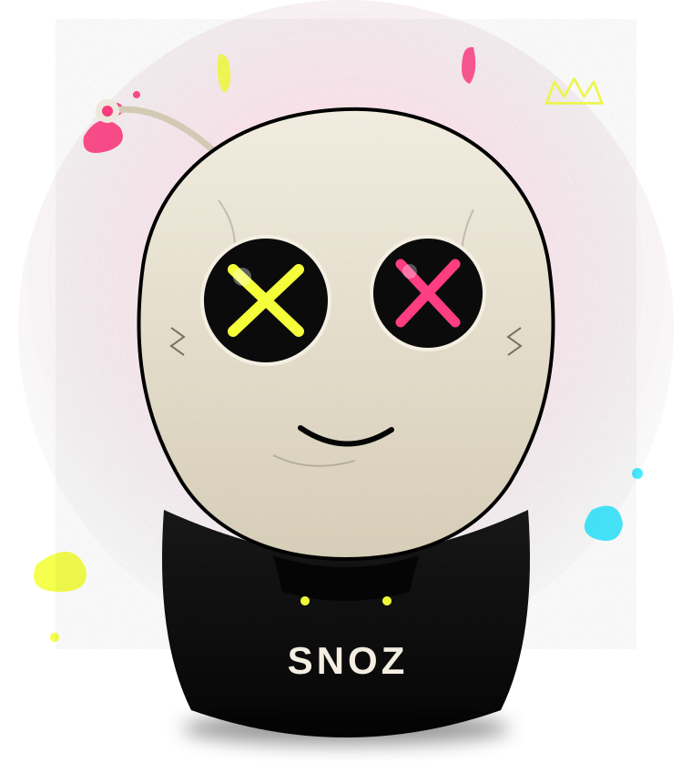
One idea. Endless transformation.
SNOZ began as an artistic idea from Elijah Snoz — a sketch, a feeling, a character who refused to look like anything else. It evolved into a full visual universe, a meme, and a community that keeps reshaping what SNOZ can be.
The Sketch
A single doodle by Elijah Snoz — a strange, expressive face with X eyes. No brief, no plan. Just instinct.
The Character
SNOZ takes shape — a hoodie, an antenna, a personality. Playful, defiant, impossible to ignore.
The Universe
Buttersnoz, art studies, memes and mythology start stacking around the character, building a world.
The Movement
The community starts remixing, posting and holding SNOZ — turning a character into a culture.
Butter Snoz
Deep in the SNOZ universe, something melts differently. Buttersnoz is the golden, softer counterpart to SNOZ — mythic, a little mysterious, and still being written.
Nobody fully agrees on what Buttersnoz is yet. A rival? A memory? A future form of SNOZ itself? That's the point — Buttersnoz exists in the space between lore and the community's own imagination, left open for collectibles, animation, stories and fan-made art still to come.
Made by hand. Made by Elijah.
Every SNOZ study starts as original art — ink, paint, digital, whatever the character demands that day. This is a working gallery, not a finished collection.
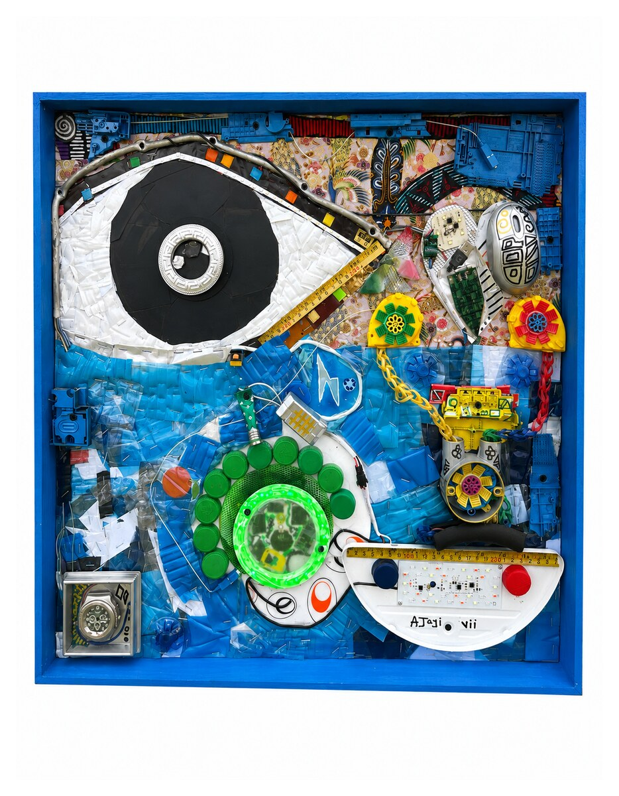
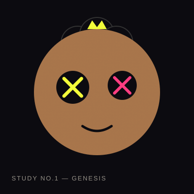
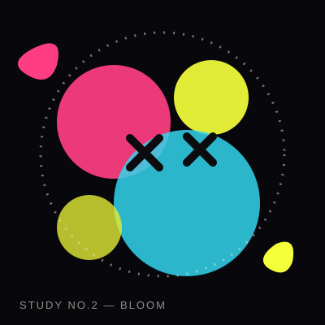
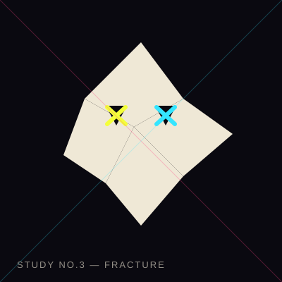
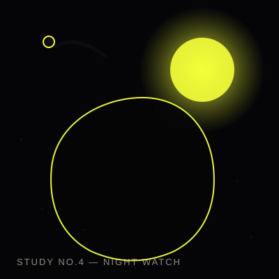
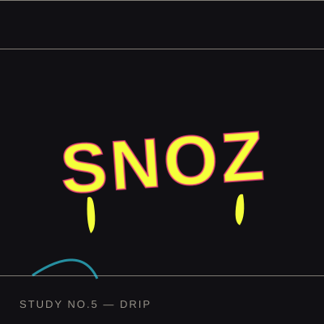
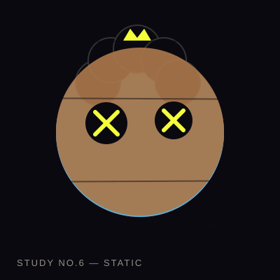
Chaos, but make it cute.
SNOZ doesn't take itself seriously — that's the whole point. Screenshot it, remix it, caption it. If it makes someone laugh, it's doing its job.
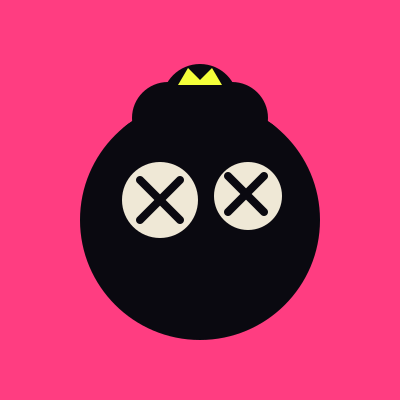
WHEN THE CHART WIGGLES
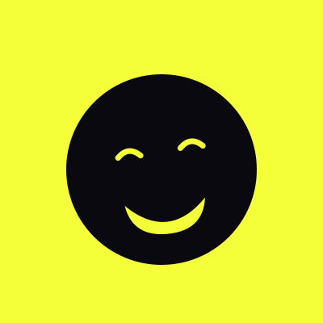
ME EXPLAINING SNOZ TO MY FRIENDS AGAIN
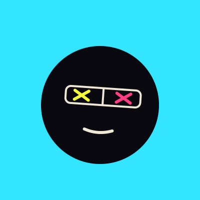
CAUSE WHY NOT?
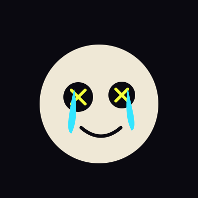
SNOZ NEVER SLEEPS. IT TRANSFORMS.
More drops weekly. Tag @snoz to get featured.
We don't follow trends. We transform them.
A global community of artists, collectors, builders and internet weirdos. This is just the beginning — join in and help shape where SNOZ goes next.
"Snoz never sleeps. It transforms."
"Another piece from the void."
"Meme it. Live it. Be it."
"Creating the SNOZ universe, one drop at a time."
The culture has a token.
SNOZ the token exists to carry SNOZ the culture on-chain. It's part of the universe — not the point of it.
SNOZ
Ghy5KXwBbfagjtMx7pTfR7RTfbtTNjuHrVS54q59pump
Live market data isn't pulled into this page — figures show as "—" until a data source is wired up, so nothing here is guessed or estimated. SNOZ is a cultural and community token; nothing on this site is financial advice, and no returns are promised or implied. Always verify the mint address above before trading.
Where SNOZ is headed.
No promises of price. Just the plan for the universe.
Genesis
SNOZ character defined, token deployed on Solana, first art studies and memes released to the community.
Culture Build
Weekly meme drops, community art contests, and the first Buttersnoz lore fragments released.
Expansion
Buttersnoz storyline expands, first animated shorts explored, community-created SNOZ art highlighted site-wide.
Collectibles
Collectible SNOZ and Buttersnoz releases, designed with and for the community that got us here.
Become part of the movement.
Artists, collectors, meme lords and internet weirdos welcome. Bring your creativity — SNOZ will do the transforming.